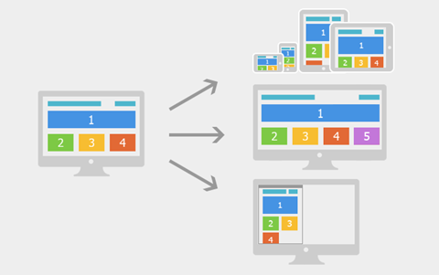
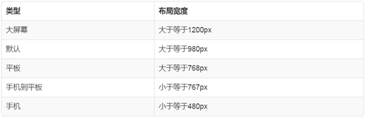
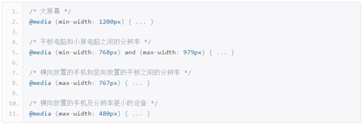

1、固定宽度布局：为网页设置一个固定的宽度，通常以px做为长度单位，常见于PC端网页。
2、流式布局：为网页设置一个相对的宽度，通常以百分比做为长度单位。
3、栅格化布局：将网页宽度人为的划分成均等的长度，然后排版布局时则以这些均等的长度做为度量单位，通常利用百分比做为长度单位来划分成均等的长度。
4、响应式布局：通过检测设备信息，决定网页布局方式，即用户如果采用不同的设备访问同一个网页，有可能会看到不一样的内容，一般情况下是检测设备屏幕的宽度来实现。
Responsive design，意在实现不同屏幕分辨率的终端上浏览网页的不同展示方式。通过响应式设计能使网站在手机和平板电脑上有更好的浏览阅读体验。

如上图所示，屏幕尺寸不一样展示给用户的网页内容也不一样，我们利用媒体查询可以检测到屏幕的尺寸（主要检测宽度），并设置不同的CSS样式，就可以实现响应式的布局。
我们利用响应式布局可以满足不同尺寸的终端设备非常完美的展现网页内容，使得用户体验得到了很大的提升，但是为了实现这一目的我们不得不利用媒体查询写很多冗余的代码，使整体网页的体积变大，应用在移动设备上就会带来严重的性能问题。
响应式布局常用于企业的官网、博客、新闻资讯类型网站，这些网站以浏览内容为主，没有复杂的交互。
一般我们会对常见的设备尺寸进行划分后，再分别确定为不同的尺寸的设备设计专门的布局方式，如下图所示

以上是我们对常见的尺寸进行分类后的结果，下图是与之对应的媒体查询条件。
